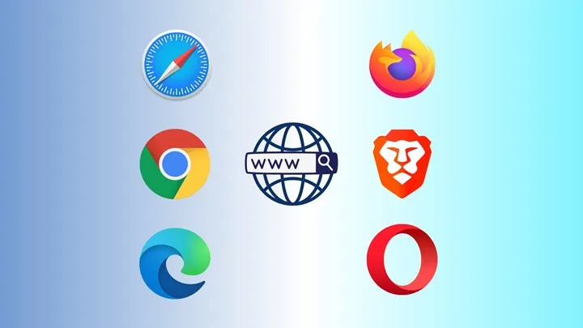

Apple'ın tarayıcı kararı Google ve Mozilla'yı rahatsız etti
Apple, iOS'te çalışan tarayıcıların kendi tarayıcı motorlarını kullanmasına izin verecek. Ancak değişikliğin
sadece Avrupa'da geçerli olması Google ve Mozilla'yı rahatsız ediyor.

Avrupa Birliği'nin yeni kuralları neticesinde Apple, iPhone ve iPad'lerin çalışma şekillerinde bazı
değişiklikler yapmak zorunda kaldı. Bunlardan biri de web tarayıcılarla ilgili değişiklikler oldu. Bundan böyle
iOS'te çalışan tarayıcılar kendi tarayıcı motorlarını kullanabilecek. Şuanda bütün tarayıcıların sadece
Safari'nin Webkit motorunu kullanmasına izin veriliyor.
"İki farklı sürüm rekabeti zorlaştırıyor"
Ancak bu değişiklik sadece Avrupa'da geçerli olacak. Bu durum Google ve Mozilla'yı rahatsız etmiş durumda.
Şirketler değişikliğin sadece Avrupa'da geçerli olmasının işleri zorlaştırdığını söylüyorlar. Çünkü biri Avrupa
diğeri dünyanın geri kalanı için olmak üzere iki farklı sürüm üzerinde çalışmaları gerekecek. Bu durumun adil
olmadığını söyleyen Mozilla, Safari dışındaki tarayıcıların rekabet etmesini zorlaştırdığını düşünüyor.
Google'ın Chrome ekibi de aynı fikirde.
Şu anda Chrome veya Firefox'u bir iOS cihazına indirdiğinizde temelde Safari'yi farklı bir görünümde kullanıyor
oluyorsunuz. Bunun nedeni Apple'ın şimdiye kadar diğer tarayıcıların kendi teknolojilerini kullanmasına izin
vermemesi. İnsanlar bir süredir diğer tarayıcıların sahip olduğu yeni özelliklerin Safari'ye eklenmesinin yavaş
gerçekleştiği konusunda şikayetçi durumda. Yeni değişiklikle beraber rekabetin de artacağı şüphesiz. Ancak bu
değişikliğin sadece Avrupa'da gerçekleşmesi işleri zorlaştıracak gibi görünüyor.